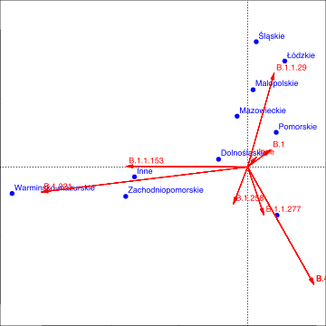

Na dzień --DATE-- w bazie GISAID są --NUMBER-- sekwencje SARS-COV-2 z Polski.
Maksymalna data pobrania dla próbek z bazy GISAID: --DATELAST--.
W bazie są --VARIANTS2-- warianty wirusa oznaczone z bazy GISAID. Najczęstsze to --VARIANTSLIST2--. Warianty z mutacją N501Y (zaznaczone na czerwono) to warianty alarmowe o zwiększonej zakaźności.
W bazie są --VARIANTS-- linie wirusa oznaczone z bazy Pango. Najczęstsze to --VARIANTSLIST--. Warianty B.1.1.7 i B.1.351 (zaznaczone na czerwono) to warianty alarmowy o zwiększonej zakaźności.

Czas od pobrania materiału do zgłoszenia to najczęściej od 2 do 5 tygodni.
Dane o wariancie wirusa uzupełniono o informacje o województwie na bazie serwera Penelope. Niestety jest ona rzadziej aktualizowana więc na przedstawionej mapie nie ma najnowszych szczepów. Widzimy jednak duży udział B.1.221 w Warmińsko-mazurskim i B.1.29 w Śląskim.
